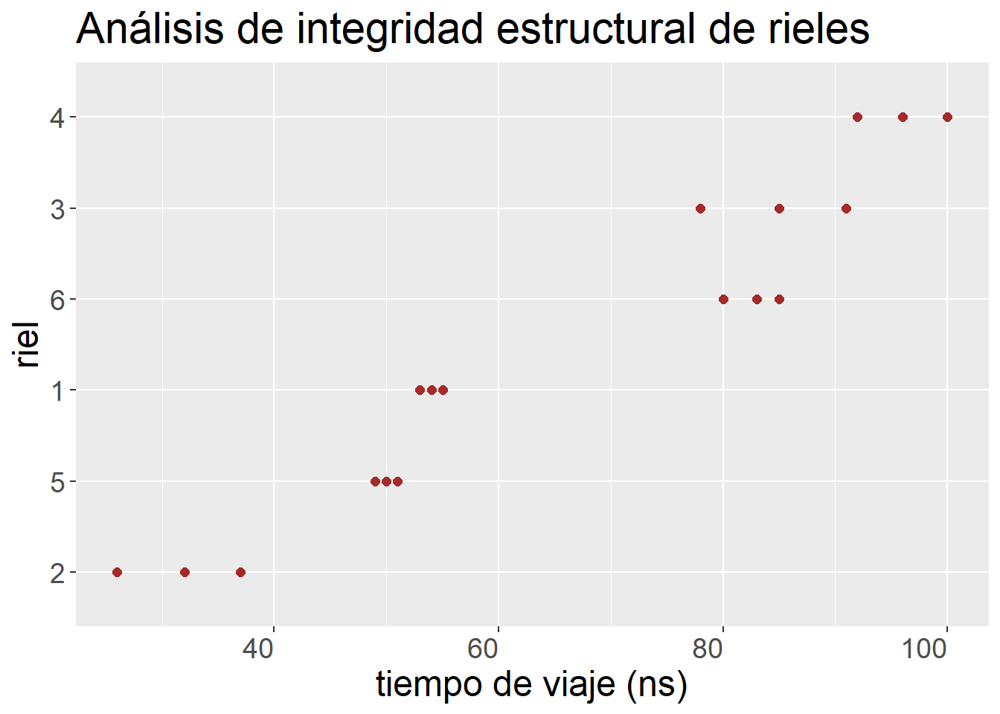
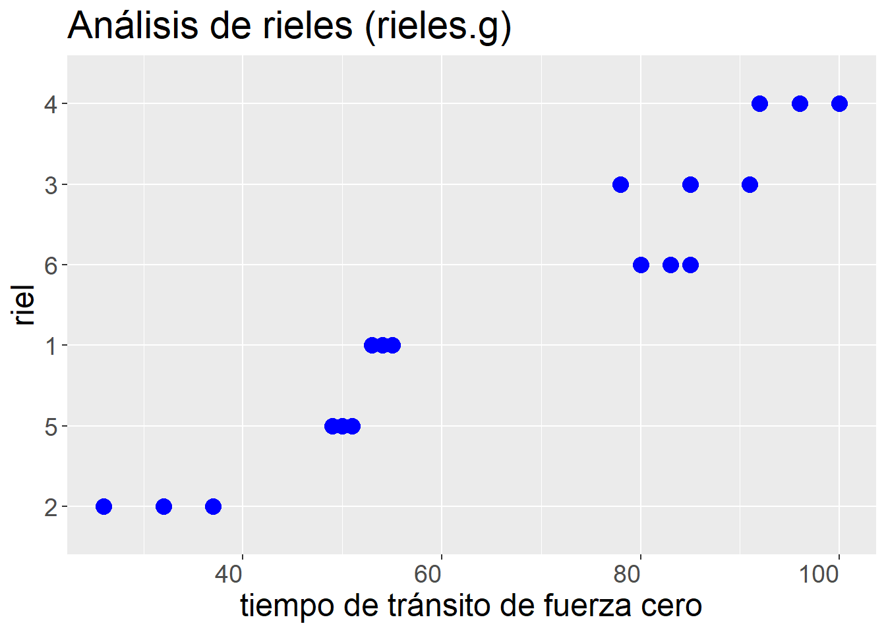
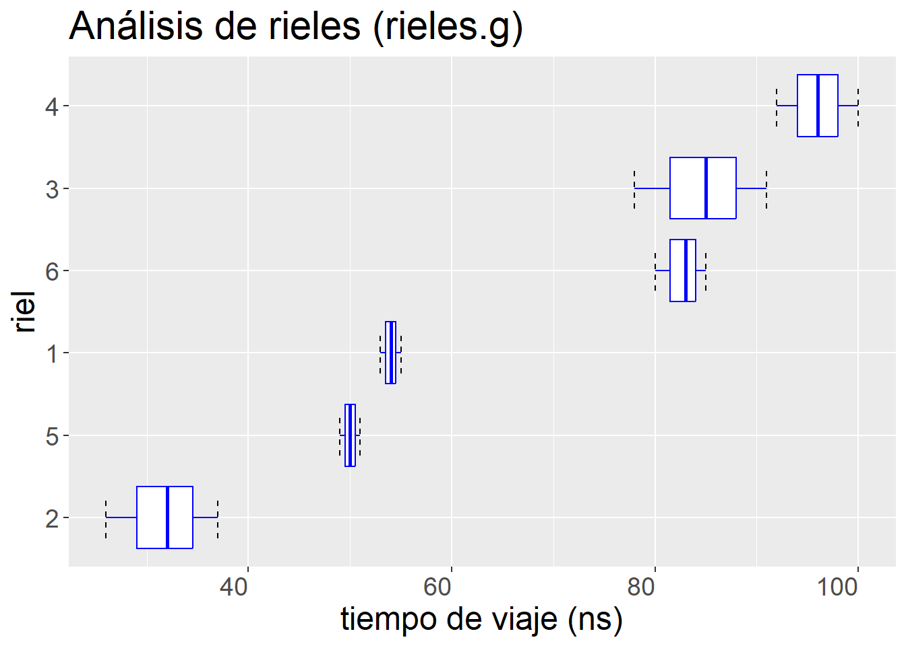
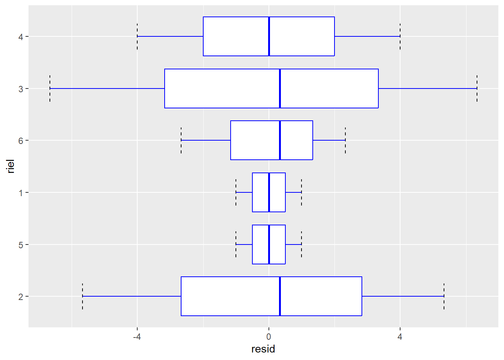

Diseños con multiples niveles de unidades experimentales
Hay situaciones en las que un estudio requiere considerar unidades experimentales múltiples. Por ejemplo, si estamos haciendo un estudio en parcelas forestales y las parcelas son sujetas a tratamientos, claramente esas parcelas son las unidades experimentales de primera mano.
Sin embargo, imaginemos que la variable de respuesta es el contenido de nitrógeno en el suelo, Es poco práctico recolectar la totalidad del suelo hasta, digamos 15cm de profundidad de cada parcela para determinar el contenido de nitrógeno en el suelo de toda la parcela.
Precaución¿Qué opciones tenemos?
Existe ayuda en R para el diseño de experimentos, como podemos ver en este preprint
La opción natural sería en este caso tomar una muestra de suelo en cada parcela, y hacer las determinaciones de contenido de nitrógeno en ellas. Al hacer esto, no conoceremos el contenido de nitrógeno de las parcelas, lo estimaremos con un margen de error, es decir con un componente de varianza asociado con el procedimiento de muestreo. Las muestras son lo que podríamos llamar unidades experimentales pequeñas que, además del efecto del tratamiento son afectadas por el procedimiento de muestreo como factor adicional.
Otra situación es, por ejemplo, un experimento sobre el efecto del cambio climático sobre la fotosíntesis de árboles sujetos a distintos niveles de fertilizante. La situación se complica porque lo que interesa es saber si el incremento en la temperatura afecta el contenido de nitrógeno en las hojas, para lo cual se opta por hacerlo mediante un muestreo en el que se eligen ramas en cada árbol para exponerlas a una atmósfera a temperaturas controladas. ¿Cuantas hojas habríamos de utilizar para hacer las determinaciones confiablemente?
Los árboles son unidades experimentales grandes tratadas con fertilizante y las ramas son unidades experimentales chicas que reciben el tratamiento factorial fertilizante + temperatura. Además hay que notar que muy probablemente hay un efecto “idiosincrático” del árbol que genera variación en el comportamiento de las ramas.
Uno de los principales problemas que enfrentan los ferrocarriles es la falla en las vías. Los defectos en los raíles, como parte básica de la vía, pueden provocar accidentes graves. La inspección de los rieles es crítica, considerando el enorme tráfico que soportan actualmente, la mayor velocidad y las cargas más pesadas. La inspección visual sólo puede detectar defectos superficiales y, a veces, signos evidentes de problemas internos, la defectoscopía ultrasónica desempeña un papel insustituible en la inspección de los rieles durante su funcionamiento.
El estudio de las fuerzas y tensiones no destructivas en los materiales proporciona información importante para un diseño de ingeniería eficaz. El artículo Zero-Force Travel-Time Parameters for Ultrasonic Head-Waves in Railroad (Materials Evaluation, 1985: 854-858) reporta un estudio del tiempo de tránsito de un cierto tipo de onda que se obtiene al someter rieles de ferrocarril a esfuerzos de tensión longitudinal. Se realizaron tres mediciones en cada uno de seis rieles seleccionados aleatoriamente de una población más amplia de ellos. Los investigadores buscaban caracterizar la variación en el tiempo de viaje como referencia para describir la variabilidadtípicaentre los rieles que estaban adquiriendo y usando. Los ingenieros se interesaban en precisar la variabilidad atribuible al ejercicio de realizar las mediciones en un mismo riel y la variabilidad que expresan los distintos rieles. Los datos son valores en nanosegundos, resultado de restar 36.1 \(\mu s\) a cada observación.
Este ejemplo es un caso simple de efectos aleatorios. En resumen, seis rieles fueron tomados al azar y sometidos a prueba tres veces cada uno mediante la medición del tiempo que le toma a cierto tipo de ondas ultrasónicas viajar a lo largo del riel. La Única condición experimental que cambia entre observaciones es el riel.
Claramente el estudio tiene un solo criterio de clasificación, como posible condición de contraste. La intención del estudio fue la determinación de:
Tiempo de tránsito “típico” de un riel (tiempo esperado de tránsito)
Variación en el tiempo de tránsito promedio entre los rieles (variabilidad entre rieles)
Variación al medir el tiempo observado de tránsito en un mismo riel (variabilidad dentro de rieles)
Utilizaremos la biblioteca nlme (Linear and Nonlinear Mixed Effects Models, de tipo Gausiano o normal) para ajustar los modelos de efectos mixtos.
Como hemos estado viendo, actualmente resulta casi obligatorio recurrir a ggplot2 para producir gráficas con calidad publicación. Esta biblioteca pone en práctica la propuesta que hacen sus autores de una semántica de graficación, la que Hadley Wickham explica originamente en su libro publicado en 2009. Actualmente Hadley trabaja con otros dos coautores (Danielle Navarro y Thomas Lin Pedersen) en al 3ra. edición, lo hacen como un preprint que pueden encontrar aquí. La gran influencia de este planteamiento a la producción de gráficas de datos ha dado lugar a muchas ideas y recursos de ayuda que fácilmente se pueden encontrar en la Web.
los datos con los que trabajaremos en esta sesión están en la tabla Rail de la biblioteca nlme. Para acomodarlos a mis propósitos los copie a mi espacio de trabajo y los guardé en una variable con un nombre de mi gusto. Los datos de los rieles están ordenados según fueron ensayados.
Código
library(nlme)
Adjuntando el paquete: 'nlme'
The following object is masked from 'package:dplyr':
collapse
La tabla rieles fue creada como una estructura agrupada con la función groupeData de la biblioteca nlme. Veremos más adelante como usar esta función. Esta función agrega metadatos a la tabla. Si interesa hacer cambios a los metadatos de la tabla agrupada hay que usar la función update que ejemplificaré a continuación. Lo primero es explorar los atributos asignados.
Ahora cambiemos estos atributos para que todo esté expresado en español y de paso corregir la fórmula, que tal como está, pierde la referencia adecuada a las variables que contiene la tabla, pues yo cambié los nombres de las variables.
Código
rieles <-update(rieles, formula = viaje ~1| riel, FUN = mean,labels =list(y ="Tiempo de viaje con fuerza cero"),units =list(y ="(nano segundos)"))# Encontré un detallito raro de atributos que se quedan con basura. # Aunque no parecen producir ningún problema, esta es una manera de limpiarla.attributes(attributes(rieles)$formula)$".Environment"<-environment()environment(attributes(rieles)$FUN) <-environment()attributes(rieles)
A esta tabla se le ha aplicado la función groupedData con la fórmula:
viaje ~ 1 | riel
Esta estrategia permite darle mantenimiento a los metadatos, que incluyen indicaciones sobre el agrupamiento de los datos en la tablas. Para aprovechar esta estructura podemos usar funciones especiales, por cierto, dentro del paquete nmle, puedes averiguar un poco más al respecto con help(plot.nmGroupedData):
gapply - aplica funciones por grupos
gsummary - calcula los resúmenes de datos por grupos
Por lo pronto veamos los datos en una gráfica con el factor riel que define los renglones cualitativos sobre los que se grafican los datos cuantitativos de velocidad de viaje.
Código
ggplot(rieles, aes(x = viaje, y = riel, group = riel)) +geom_point(shape =19, size =4, color ="blue") +labs(title ="Análisis de integridad estructural de rieles") +xlab(label ="tiempo de viaje (ns)") +ylab(label ="riel") +theme(text =element_text(size =18), axis.text.x =element_text(angle =0, hjust =1))

¿Cómo se ven estos datos? ¿qué piensas que habría que hacer?
¿Cómo se asigna la estructura de agrupación a una tabla de datos? Como dije al principio, se puede usar la función groupedData de la biblioteca nlme. Hagamos un ahora un ensayo de este proceso.
Código
rieles.sg <-as.data.frame(rieles)
Estructura de la tabla sin información de agrupamiento:
Tomo los datos sin agrupamiento y proporciono los metadatos que definen la estructura de agrupamiento que caracterizan a la tabla :
Código
rieles.g <-groupedData (viaje ~1| riel, data = rieles.sg, FUN = mean,units =list( x ="(ns)"),labels =list(x ="riel", y ="tiempo de tránsito de fuerza cero"), )str(rieles.g)
ggplot(rieles.g, aes(x = viaje, y = riel, group = riel)) +geom_point(shape =19, size =4, color ="blue") +labs(title ="Análisis de rieles (rieles.g)") +xlab(label =attr(rieles.g, "labels")$y) +ylab(label ="riel") +theme(text =element_text(size =18), axis.text.x =element_text(angle =0, hjust =1))

Como hemos visto, cambiar los metadatos de la tabla se hace con la función update().
Como una demostración simple de esto, le cambiaré la etiqueta, que es un atributo asociado a la variable de respuesta en la estructura de agrupamiento. El dato lo puedo recuperar entonces con la funcción attr para “labels”. En seguida te pongo un ejemplo
Código
rieles.g1 <-update(rieles.g, labels =list(y ="tiempo (ns)"))ggplot(rieles.g1, aes(x = viaje, y = riel, group = riel)) +geom_point(shape =19, size =4, color ="blue") +labs(title ="Análisis de rieles (rieles.g1)") +xlab(label =attr(rieles.g1, "labels")$y) +ylab(label ="riel") +theme(text =element_text(size =18), axis.text.x =element_text(angle =0, hjust =1))
Primera posibilidad de análisis. Modelo lineal simple. Es una elección natural en este caso, pues estima la media general. Hay que recordar seleccionar contrastes de tipo “tratamiento” aun para factores ordenados.
¿Cómo representamos al riel en el modelo?
Código
options ()$contrasts
unordered ordered
"contr.treatment" "contr.poly"
Empecemos por construir el modelo nulo. ¿qué resultados nos ofrece este modelo?.
Código
rieles.m1 <-lm(viaje ~1, data =rieles.g)summary(rieles.m1)
Call:
lm(formula = viaje ~ 1, data = rieles.g)
Residuals:
Min 1Q Median 3Q Max
-40.50 -16.25 0.00 18.50 33.50
Coefficients:
Estimate Std. Error t value Pr(>|t|)
(Intercept) 66.500 5.573 11.93 1.1e-09 ***
---
Signif. codes: 0 '***' 0.001 '**' 0.01 '*' 0.05 '.' 0.1 ' ' 1
Residual standard error: 23.65 on 17 degrees of freedom
Así, tengo una estimación del tiempo promedio de tránsito de: 66.5. El error estándar que estimo es: 5.573
¿cómo quedan los residuos de este modelo?
El gráfico de cajas y bigotes o cajas y alambres es interesante para explorar lo que está pasando con los rieles.
¿Qué piensas de esta gráfica? ¿Te gusta lo que ves?
Código
ggplot(rieles.g, aes(x = viaje, y = riel, group = riel)) +stat_boxplot(geom ='errorbar', linetype =2, width =0.5) +geom_boxplot(shape =19, size =0.5, color ="blue") +labs(title ="Análisis de rieles (rieles.g)") +xlab(label ="tiempo de viaje (ns)") +ylab(label ="riel") +theme(text =element_text(size =18), axis.text.x =element_text(angle =0, hjust =1))

Al ignorar el efecto de los rieles, dentro de los que repito la prueba para obtener las medidas de interés se produce un defecto que se ve claramente en esta gráfica de residuos.
Los residuos de cada riel tienen todos el mismo signo. Es decir se mantiene un efecto sistemático importante en ellos.
Te parecería buena idea agregar el término que representa al riel para resolver este problema?
¿Es fijo o aleatorio?
Este nuevo modelo permite que cada riel sea representado por una media diferente. Suponiendo efectos fijos, la estimación del parámetro de interés es esta.
Código
rieles.m2 <-lm(viaje ~ riel -1, data = rieles.g)rieles.m2
Analysis of Variance Table
Response: viaje
Df Sum Sq Mean Sq F value Pr(>F)
riel 6 88911 14818.5 916.61 2.971e-15 ***
Residuals 12 194 16.2
---
Signif. codes: 0 '***' 0.001 '**' 0.01 '*' 0.05 '.' 0.1 ' ' 1
Código
summary(rieles.m2)
Call:
lm(formula = viaje ~ riel - 1, data = rieles.g)
Residuals:
Min 1Q Median 3Q Max
-6.6667 -1.0000 0.1667 1.0000 6.3333
Coefficients:
Estimate Std. Error t value Pr(>|t|)
riel2 31.667 2.321 13.64 1.15e-08 ***
riel5 50.000 2.321 21.54 5.86e-11 ***
riel1 54.000 2.321 23.26 2.37e-11 ***
riel6 82.667 2.321 35.61 1.54e-13 ***
riel3 84.667 2.321 36.47 1.16e-13 ***
riel4 96.000 2.321 41.35 2.59e-14 ***
---
Signif. codes: 0 '***' 0.001 '**' 0.01 '*' 0.05 '.' 0.1 ' ' 1
Residual standard error: 4.021 on 12 degrees of freedom
Multiple R-squared: 0.9978, Adjusted R-squared: 0.9967
F-statistic: 916.6 on 6 and 12 DF, p-value: 2.971e-15
¿interpretación de este nuevo resultado?
……….. ¿y los residuos? ¿cómo se ven ahora?
Código
res.m2 <-data.frame(resid =resid(rieles.m2), riel = rieles.g$riel)ggplot(res.m2, aes(x = resid, y = riel, group = riel)) +stat_boxplot(geom ='errorbar', linetype =2, width =0.5) +geom_boxplot(shape =19, size =0.5, color ="blue")
A pesar de que el modelo remueve los efectos sistemáticos asociados a las características particulares de los distintos rieles, no proporciona una representación satisfactoria del problema.
si los rieles fueran de efectos fijos ¿qué implicaría este modelo? ¿cuál sería una interpretación razonable del tratamiento riel?
Al suponer efectos fijos surge el problema de que se modelan de algún modo variantes individuales de los rieles que se usaron para realizar las pruebas. Desafortunadamente, tal clasificación no tiene ningún sentido en el contexto. Lo que interesa es estimar el tiempo de tránsito típico de cualquier riel en la población de rieles de la que se tomó la muestra.
Además, la misma falta de correspondencia conceptual entre el modelo y la estimación que interesa, hace que este nuevo modelo no proporcione una clara estimación de la variación (componente de varianza), entre rieles, que es otra de las preguntas centrales de este estudio. Otro problema de este modelo de efectos fijos es que el número de parámetros crece linealmente con el número de rieles que se usan para realizar la prueba, generando un comportamiento extraño en el modelo respecto de la pregunta.
El Modelo de efectos aleatorios ¿resuelves estos problemas?.
En este enfoque se considera a los rieles como un efecto aleatorio sobre la media general. Hay principalmente dos métodos para ajustar este tipo de modelos el de máxima verosimilitud (ML) y el de máxima verosimilitud restringida (REML, default). La función que utilizaremos para el caso lineal es lme() que se usa de modo muy semejante a lm(). Sin embargo, nótese que ahora el modelo tiene dos grupos de fórmulas, una para describir los efectos fijos (opción fixed) y otra para describir los aleatorios (opción random). Esté último es siempre una fórmula que tiene sólo el lado derecho (no hay interés en predecir medias, ¿recuerdas?) y da cuenta de los efectos aleatorios y de la estructura de agrupamiento de los datos. Un agrupamiento se representa mediante el símbolo de barra vertical: |. Ahora, ajustemos un modelo de este tipo para obtener la estimación de máxima verosimilitud restringida para los rieles.
Linear mixed-effects model fit by REML
Data: rieles.g
Log-restricted-likelihood: -61.0885
Fixed: viaje ~ 1
(Intercept)
66.5
Random effects:
Formula: ~1 | riel
(Intercept) Residual
StdDev: 24.80547 4.020779
Number of Observations: 18
Number of Groups: 6
Ayúdame a comentar estos resultados ¿qué te llama la atención?
Código
summary(rieles.m3)
Linear mixed-effects model fit by REML
Data: rieles.g
AIC BIC logLik
128.177 130.6766 -61.0885
Random effects:
Formula: ~1 | riel
(Intercept) Residual
StdDev: 24.80547 4.020779
Fixed effects: viaje ~ 1
Value Std.Error DF t-value p-value
(Intercept) 66.5 10.17104 12 6.538173 0
Standardized Within-Group Residuals:
Min Q1 Med Q3 Max
-1.61882658 -0.28217671 0.03569328 0.21955784 1.61437744
Number of Observations: 18
Number of Groups: 6
El ajuste produce los estimadores que buscamos: 1. tiempo de tránsito típico = 66.5 2. Variabilidad entre rieles = 24.81 3. Variabilidad dentro de rieles = 4.02
En este caso los estimadores 1 y 3 son prácticamente idénticos a los obtenidos con el modelo lineal ordinario, pero esto no siempre es así. La coincidencia deriva de que la muestra está balanceada (mismo tamaño de muestra en cada riel). Además, ahora tengo un razonable estimador de la variación entre rieles (2).
¿Qué utilidad pueden tener estas estimaciones?
El resumen del ajuste muestra dos criterios nuevos para comparar y evaluar modelos. Estas medidas son resultado de la búsqueda de alternativas para valorar modelos que no se centre en el famoso valor de p.
AIC - Criterio de información de Akaike = -2 * logVerosimilitud + 2 numParámetros
Para interpretar el Criterio de Información de Akaike (AIC) al comparar modelo, lo que hacemos es valorar la diferencia en el AIC que se asocia a los modelos que queremos comparar. Si queremos ser muy formales le podemos llamar a eso la (\(\Delta \text{AIC} = AIC_{i}-AIC_{0}\)). Como regla de dedo podemos recurrir a lo siguiente, que se ha venido estableciendo como práctica común, no hay mayor fundamento que eso. Como ya hemos venido haciendo, podemos iniciar por construir el modelo con todas las variables que previmos, el modelo completo. Este modelo producirá el AIC más pequeño y lo podemos tomar como referencia inicial. tomamos el modelo de referencia. Ahora, el tamaño de la diferencia la podemos interpretar así:
\(\Delta AIC \le 2\): Podemos pensar que los modelos explican casi por igual el sistema y puedo optar por considerarlos equivalentes. La diferencia es despreciable.
\(+2<\Delta AIC\le 4\): Sugiere que posiblemente el modelo reducido (mayor AIC) ajusta bien a los datos, aunque sí hay una ligera pérdida, al contrastarlo con lo que logra el modelo más comolejo.
\(4<\Delta AIC\le 7\): Si ocurre esto, el modelo reducido sigue teniendo soporte defendible en su ajuste a los datos, pero hay ya una pérdida marcada al comparar lo aue logra el modelo comoleto.
\(\Delta AIC>10\): Esta amgnitud de perdida de ajuste a los datos sugiere aue el modelo reducido en cuesión tiene nulo o insignificante apoyo.
Otros criterios de juicio. Desde luego siempre se prefiere el modelo con el AIC más bajo. Por el principio de parsimonia, si dos modelos tienen un \(\Delta AIC\) muy bajo (\(\le 2\)), se suele preferir el más simple (el que tenga menos parámetros).Tamaño de muestra ((AICc)): Si el tamaño de la muestra es pequeño en comparación con el número de parámetros (\(N/K<40\)), es mejor utilizar el AIC corregido (\(AICc\)) para evitar sobreajuste.
Es bueno contar con ellos para comparar la calidad general de los modelos ajustados, pero no olviden que centrar nuestra atención en los intervalos de confianza es más informativo y potencialmente interesante. Finalmente, veamos los residuos
¿Cómo se ven?
¿Qué nos sugieren estos resultados?
Código
ggplot(rieles.g, aes(x =resid(rieles.m3), y = riel, group = riel)) +stat_boxplot(geom='errorbar', linetype =2, width =0.5) +geom_boxplot(shape =19, size =0.5, color ="blue")

Puedo obtener los estimadores de los coeficientes igual que en el caso lm() con coef(), pero además puedo obtener los coeficientes de los componentes aleatorios con random.effects() (forma breve: ranef()).
¿Que hay de los intervalos de confianza de los parámetros de efectos fijos estimados?.
Como he venido insistiendo, esta forma de mostrar resultados es cada vez más apreciada y es más conveniente que el enfoque de uso de valores de “p” en las publicaciones. La función intervals() supone un nivel de confianza del 95%, si no se le dice otra cosa.
¿Qué piensas de estos estimadores de intervalos de confianza?
Código
intervals(rieles.m3, 0.95)
Approximate 95% confidence intervals
Fixed effects:
lower est. upper
(Intercept) 44.33921 66.5 88.66079
Random Effects:
Level: riel
lower est. upper
sd((Intercept)) 13.27436 24.80547 46.35335
Within-group standard error:
lower est. upper
2.695012 4.020779 5.998737
Control del glucógeno en hígados de rata
Este ejemplo fue presentado originalmente en Sokal & Rohlf (1981). Se trata de un experimento con un solo factor con tres dietas: 1 = “control”, 2 = “compuesto 217”, 3 = “compuesto 217 + azúcar”. Fueron administrados a seis ratas, dos por tratamiento. El análisis se complica por el hecho de que, para el análisis, se tomaron tres muestras del hígado de cada rata y se hicieron dos determinaciones de contenido de glucógeno en cada muestra. Podríamos decir, un tanto despectivamente, que hay seis pseudoréplicas por rata para dar un total de 36 lecturas en total. Pero quizás en lugar de hablar en estos términos deberíamos simplemente reconocer que lo que estamos haciendo es organizar un muestreo dentro del estudio (lo que genera algo de variación aleatoria), para obtener el dato de la variable de respuesta en el experimento, que es distinto a lo usual de hacer una “cosecha total”, que es la práctica ideal (pues evita introducir un fuente de “ruido” adicional).
Notch went outside hinges
ℹ Do you want `notch = FALSE`?
Notch went outside hinges
ℹ Do you want `notch = FALSE`?
Notch went outside hinges
ℹ Do you want `notch = FALSE`?
Modelación
Veamos el enfoque con un modelo lineal de efectos mixtos.
¿Cual es la estructura fija?, me puedes decir cuál es la ecuación correspondiente
La estructura aleatoria de los datos, cuando tiene varias fuentes, se representa como una lista de efectos (modelos) en la función lme() de la biblioteca nlme. Otra posibilidad es usar la biblioteca lme4 que contiene a la función lmer(). Al respecto, esta lectura puede ser de innterés
Este caso, como ya vimos, hay dos cosas en operación:
Hay una muestra aleatoria de ratas distintas en cada tratamiento. Cabe esperar un valor promedio de glucógeno distinto para cada animal. Esto lo representaré en el primer componente de la lista.
Hay una muestra aleatoria de fragmentos de hígado tomados de cada rata. Esperamos que estas muestras estimen una misma cantidad de glucógeno para cada animal. Esto lo representaré en el segundo componente de la lista.
En el código siguiente tanto el modelo “1” como el “2” son equivalente. Los presento como dos formas interamiables para escribir el modelo de efectos aleatorios. Hay que notar que no es correcto hacer comparaciones entre modelos que cambian en cuanto al componente “fijo” si el ajuste se hace mediante el método “REML”, en caso de tener hipótesis de interés en esta parte del modelo hay que emplear el método “ML”.
Linear mixed-effects model fit by REML
Data: ratas_g
AIC BIC logLik
231.6213 240.6003 -109.8106
Random effects:
Formula: ~1 | rata
(Intercept)
StdDev: 6.005399
Formula: ~1 | muestraH %in% rata
(Intercept) Residual
StdDev: 3.763863 4.600725
Fixed effects: glucogeno ~ tratamiento - 1
Value Std.Error DF t-value p-value
tratamientot1 140.5000 4.707166 3 29.84811 1e-04
tratamientot2 151.0000 4.707166 3 32.07875 1e-04
tratamientot3 135.1667 4.707166 3 28.71509 1e-04
Correlation:
trtmn1 trtmn2
tratamientot2 0
tratamientot3 0 0
Standardized Within-Group Residuals:
Min Q1 Med Q3 Max
-1.48211987 -0.47263005 0.03061539 0.42934293 1.82934636
Number of Observations: 36
Number of Groups:
rata muestraH %in% rata
6 18
Para comparar el efecto del tratamiento hay que usar el método “ML” y ajustar los modelos que contrastan la hipótesis de interés en el componente fijo.
Linear mixed-effects model fit by maximum likelihood
Data: ratas_g
Log-likelihood: -119.8834
Fixed: glucogeno ~ 1
(Intercept)
142.2222
Random effects:
Formula: ~1 | rata
(Intercept)
StdDev: 7.561272
Formula: ~1 | muestraH %in% rata
(Intercept) Residual
StdDev: 3.763863 4.600725
Number of Observations: 36
Number of Groups:
rata muestraH %in% rata
6 18
Linear mixed-effects model fit by maximum likelihood
Data: ratas_g
Log-likelihood: -116.6353
Fixed: glucogeno ~ tratamiento
(Intercept) tratamientot2 tratamientot3
140.500000 10.500000 -5.333333
Random effects:
Formula: ~1 | rata
(Intercept)
StdDev: 3.729149
Formula: ~1 | muestraH %in% rata
(Intercept) Residual
StdDev: 3.763794 4.600775
Number of Observations: 36
Number of Groups:
rata muestraH %in% rata
6 18
Así podemos comparar el análisis con modelos mixtos y el convencional en cuanto al efecto del tratamiento.
Código
anova(ratas.lme.m4, ratas.lme.m3)
Model df AIC BIC logLik Test L.Ratio p-value
ratas.lme.m4 1 6 245.2705 254.7716 -116.6353
ratas.lme.m3 2 4 247.7667 254.1008 -119.8834 1 vs 2 6.496197 0.0388
Código
ratas.completo.lm <-lm(glucogeno~tratamiento/rata/muestraH, data = ratas_g)anova(ratas.completo.lm)
Es importante contar con intervalos de confianza para describir de mejor manera los resultados obtenidos. La forma de hacerlo para cada tipo de modelo pude varia, así que ilustraré un par de rutas para obtenerlos.
Modelo de efectos mixtos: lme
Código
ratas.lme4.ic <-predict(ratas.lme.m4, level =0, type ="predict")
min media max
t1 133.6653 140.5000 147.3347
t2 144.1653 151.0000 157.8347
t3 128.3319 135.1667 142.0014
Bueno, veamos los residuos!!! Lo primero es recuperar lo necesario del modelo, con la función residuals
Código
df <-data.frame( resid =residuals(ratas.lme.m4, type ="pearson"), tratamiento = ratas_g$tratamiento, rata = ratas_g$rata ) # Gráfica de cajas de residuos por factor (ej. Sexo) ggplot(df, aes(x = resid, y = rata)) +geom_boxplot(fill ="skyblue", alpha =0.6) +facet_wrap(~ tratamiento) +labs(title ="Residuos del modelo lme para rata/tratamientos", y ="rata", x ="Residuos (Pearson)") +theme_gray()
Código
plot(ratas.lme.m4)
Comparaciones múltiples
Veamos qué está pasando con los efectos de los tratamientos una vez que hemos resuelto con la prueba ómnibus que hay algún efecto de tratamiento.
El modelo completo, ¿cambia significativamente al recodifcar los tratamientos de manera que supongamos que el t1 no difiere del t2? Esto equivale a comparar los dos modelos respectivos.
Código
library(tidyverse, warn.conflicts =FALSE)
── Attaching core tidyverse packages ──────────────────────── tidyverse 2.0.0 ──
✔ forcats 1.0.1 ✔ stringr 1.6.0
✔ lubridate 1.9.4 ✔ tibble 3.3.1
✔ purrr 1.2.1 ✔ tidyr 1.3.2
✔ readr 2.1.6
── Conflicts ────────────────────────────────────────── tidyverse_conflicts() ──
✖ nlme::collapse() masks dplyr::collapse()
✖ dplyr::filter() masks stats::filter()
✖ dplyr::lag() masks stats::lag()
ℹ Use the conflicted package (<http://conflicted.r-lib.org/>) to force all conflicts to become errors
Este modelo sugiere que es posible argumentar que el tratamiento combinando t1 y t3 difiere en forma apreciable o significativa con respecto del t2. Esto se aprecia al considerar los valores promedio de los tratamientos, pero no es realmente muy evidente. La forma como estoy calculando los valores tiene que considerar el tipo de reparametrización y la configuración del modelo, no olvides eso.